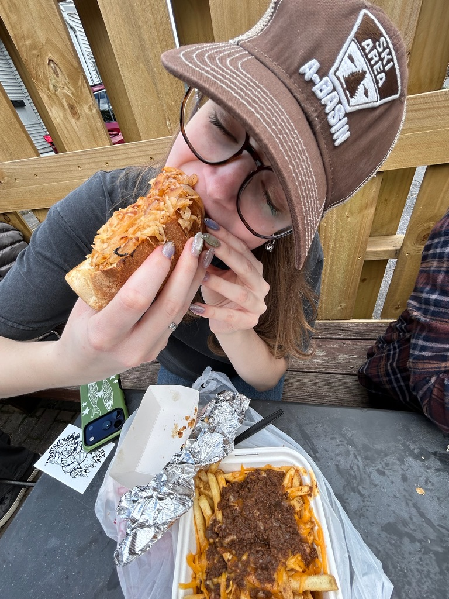
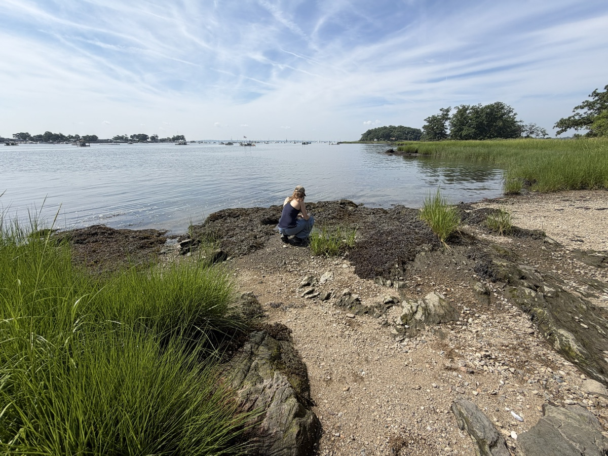
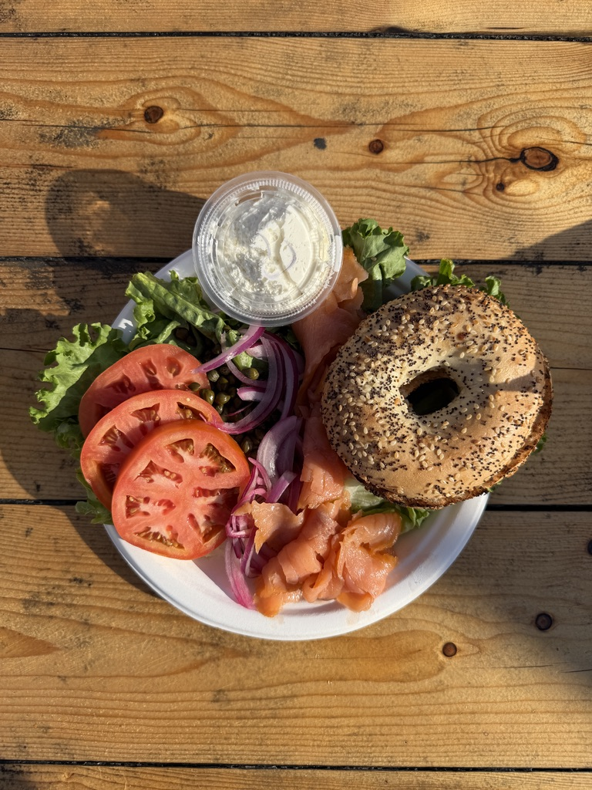

01.Trailhead_UserDeepsea_User
i make brands, graphics, and websites. sometimes i go outside, too.
CAILIN KUHN
currently -- designing at RIT · last sighting: northern flickerdepth: 0m, surfacing soon
open to full time roles starting may 2027
02.Field_NotesSample_Log
observedlogged 2024–present
FEATURED WORK


03.Hi_User
a little about myself :)



Hey, I'm Cailin! I'm a digital designer who likes making a bit of everything, from brand identities and graphic design to interfaces and digital experiences. When I'm not staring at my computer, I'm probably hiking, birdwatching, wandering around a museum, or finding another hobby to pick up.
04.SketchbookLab_Tests
things i doodled in the marginsthings i'm still testing